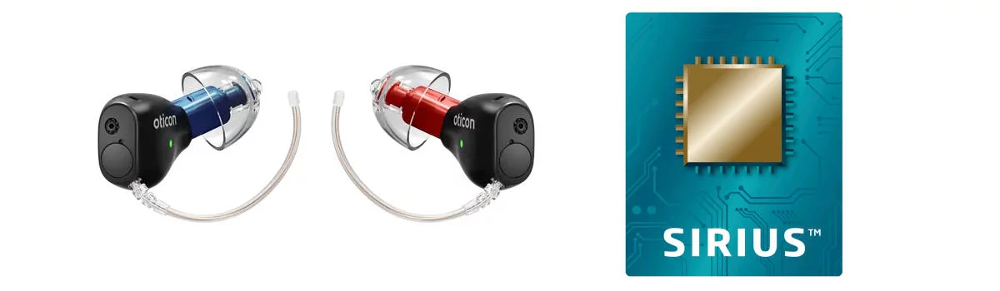
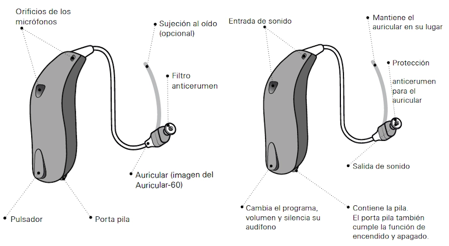

Mejoramos tu calidad de vida con las mejores prótesis auditivas, atención personalizada y tecnología de última generación. Presencial, remoto o por videollamada.


Primera revisión gratuitaAsesoramiento sin compromiso
+800 pacientesconfían en Mister Oído
Certificados+10 años experiencia
Ajuste remotosin desplazarte
Centro en Barcelonametro y bus a la puerta
Prueba y adaptación personalizada
Seguimiento presencial y remoto
Trato cercano para familias
Ayuda con subvenciones
Trabajamos con
Oticon
Phonak
Signia
Widex
Starkey
ReSound
Servicios
Nuestros servicios
Todo lo que necesitas para cuidar tu salud auditiva, en un solo lugar
Pruebas audiológicas
Diagnóstico completo de tu nivel auditivo con equipos de última generación.
Adaptación de audífonos
Selección y adaptación personalizada de audífonos multimarca según tu pérdida.
Ajuste remoto
Realizamos ajustes leves desde casa a través de la app de tu audífono.
Mantenimiento
Limpieza, cambio de filtros y revisión técnica para prolongar la vida del audífono.
Tapones a medida
Tapones personalizados para baño, sueño, música o protección laboral.
Revisiones periódicas
Seguimiento anual con recordatorios automáticos para no perderte ninguna cita.
Tecnología
Tecnología auditiva actual
Audífonos discretos, conectados y adaptados a cada tipo de pérdida auditiva
Soluciones pequeñas con gran capacidad de ajuste
Trabajamos con audífonos modernos que permiten mejorar la comprensión del habla, reducir el ruido ambiente y ajustar la experiencia según el entorno diario del paciente.
Conectividad móvil
Programas por ambiente
Ajuste remoto
Recargables
Cómo funciona
Cómo funciona un audífono
Una explicación visual para que el paciente entienda cada parte antes de la adaptación
Información clara antes de elegir
En la demo mostramos el proceso completo: revisión, recomendación, adaptación, mantenimiento y seguimiento. La web no necesita backend para enseñar este flujo de forma convincente.
Nosotros
¿Por qué Mister Oído?
La cercanía de un centro de barrio con la tecnología de las grandes cadenas
01
Cercanía de barrio
Te conocemos por tu nombre, recordamos tu historial y te atendemos sin esperas. Somos tu audioprotesista de confianza.
02
Tecnología moderna
Audífonos Bluetooth, ajuste remoto, teleconsulta y app de seguimiento. Igual que las grandes cadenas, con trato humano.
03
Atención personalizada
Tres perfiles de paciente, tres tipos de atención. Nos adaptamos a ti: mayor, adulto activo o familia con niños.
Pacientes
¿A quién ayudamos?
Soluciones adaptadas a cada etapa de la vida
JG
Juan, 80 años
Tercera edad
No entiende a su familia y le cuesta usar la tecnología. Busca una solución sencilla y discreta.
WhatsApp con el hijoAudífono pequeñoSoporte presencial
LP
Lucía, 6 años
Niños / Padres
Sus padres buscan un audífono resistente y discreto. Tramitamos juntos las ayudas PUA.
Audífonos infantilesAyudas PUASeguimiento escolar
MP
Marta, 38 años
Adulto activo
Se pierde en reuniones de trabajo. Quiere un audífono Bluetooth discreto y ajuste remoto.
Ajuste remotoCita onlineBluetooth
Opiniones
Qué dicen nuestros pacientes
Más de 800 familias ya confían en Mister Oído
"Llevaba años evitando ir al audioprotesista. Aquí me explicaron todo con paciencia. Por fin entiendo a mis nietos."
Antonio R. · 78 años · Barcelona
"El ajuste remoto me ha cambiado la vida. Trabajo mucho y no tenía tiempo de ir al centro. Ahora me ajustan el audífono y listo."
Sandra M. · 41 años · Gràcia
"Nos ayudaron con toda la tramitación de las ayudas PUA para nuestra hija. Servicio cercano y muy profesional."
Carles y Laura · Padres de Martina
"Tenía miedo de que el audífono fuera muy visible. Me recomendaron uno pequeñísimo y ahora casi nadie se da cuenta."
Rosa T. · 65 años · Eixample
"Primera revisión gratuita, sin presiones. Me explicaron mi tipo de pérdida auditiva con total transparencia."
Miquel F. · 55 años · Sant Gervasi
Marcas
Trabajamos con las mejores marcas
Audífonos de fabricantes líderes mundiales, adaptados a cada necesidad y presupuesto
Oticon
Phonak
Signia
Widex
Starkey
ReSound
FAQ
Preguntas frecuentes
Todo lo que necesitas saber antes de tu primera visita
No es obligatorio, pero sí recomendable. Puedes venir directamente a hacerte una prueba audiológica gratuita con nosotros y valorar juntos la mejor opción para tu caso.
El precio varía según el modelo y la tecnología. Trabajamos con todas las gamas. Siempre te explicamos las diferencias con total transparencia y sin presión.
Sí. Existen las ayudas PUA para niños con pérdida bilateral, y algunas comunidades tienen subvenciones adicionales. Nos encargamos de toda la tramitación contigo.
Permite al audioprotesista realizar modificaciones leves en tu audífono a través de la app del fabricante, sin que tengas que venir al centro. Ideal si tienes poca movilidad o poco tiempo.
Sí, ofrecemos un período de adaptación de prueba para que puedas comprobar que el audífono se ajusta a tu vida diaria antes de tomar una decisión definitiva.
Contacto
Pide tu cita online
Rellena el formulario y te contactamos en menos de 24 horas
Solicitud enviada. Te llamaremos en menos de 24 h.
Por favor, completa todos los campos antes de enviar.